Projects
Web Design
HTML Page Mock-up

This project involves creating the HTML structure for a website based on provided desktop and mobile mockups. The focus is on using proper HTML semantics and standard tags such as navigation, lists, sections, headers, and footers. The project requires a well-organized folder structure, meaningful class names for elements, and includes code comments.
https://ngen0004.github.io/final-project/Single-page Prototype

This project involves organizing the content and images into a structured layout, with specific instructions to position the title over a header image, and wrap text around an article image. The project emphasizes the use of valid, well-formatted HTML and CSS, with comments included for clarity.
https://ngen0004.github.io/midterm/Quiz Application

The application allows users to select a difficulty level and receive a random quiz question accordingly. Upon submitting an answer, users are informed if they answered correctly or incorrectly, and their responses are tracked. The app maintains a tally of correct and incorrect answers, displayed on the page and saved to local storage. Users can reset these statistics at any time.
https://ngen0004.github.io/mtm6302-capstone-your-github-ngen0004/UX/UI
Prototype
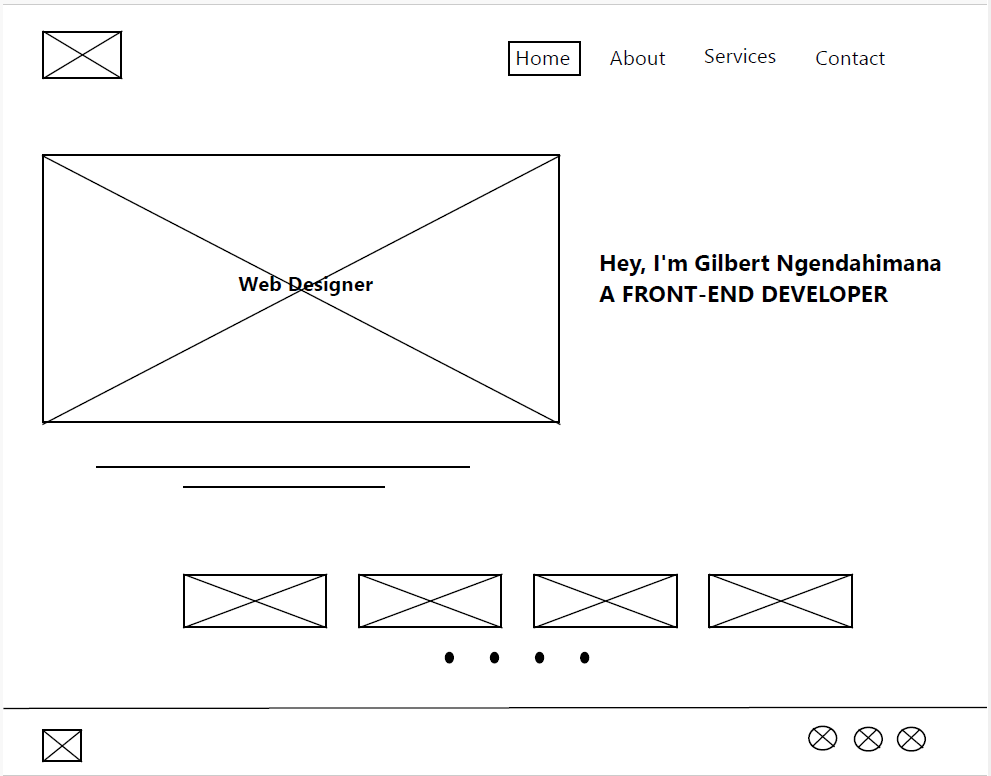 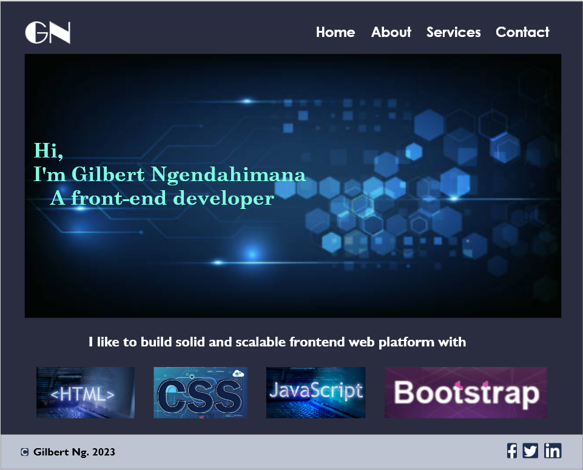This design shows a creation of a portfolio/prototype from a Lo-Fi wireframe to a Hi-Fi wireframe design on different versions (desktop size and mobile size).
Eric's Pizza Restaurant
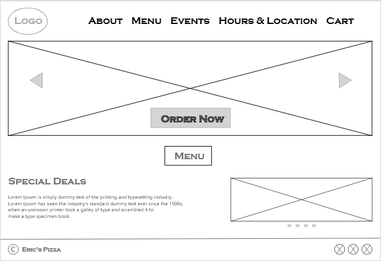 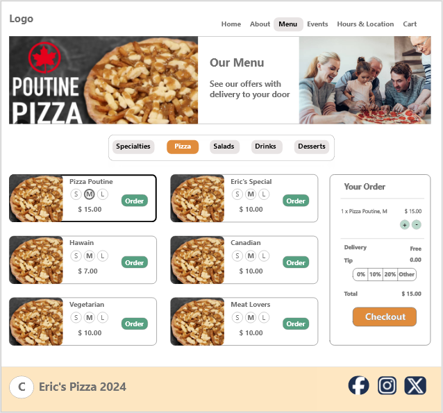This project involves improving an existing website design of a restaurant from a Lo-Fi wireframe to a Hi-Fi wireframe design on different versions (desktop size and mobile size). Adding a visually appealing menu design to attract customers and easy to navigate.
StudyLink
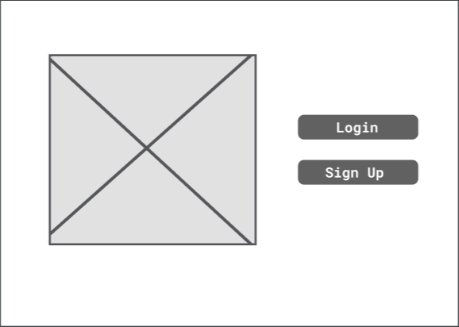 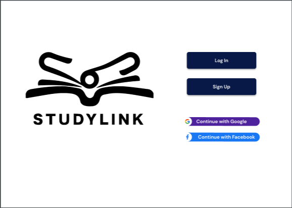This project is a creation of an interactive education application to help students find study partners in different fields, the design is from a Lo-Fi wireframe to a Hi-Fi wireframe design on different versions (desktop size and mobile size).
Graphic Design
Business Cards
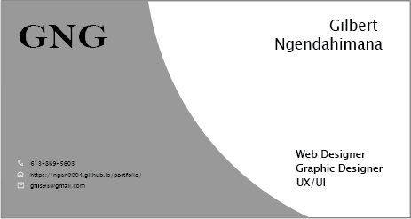 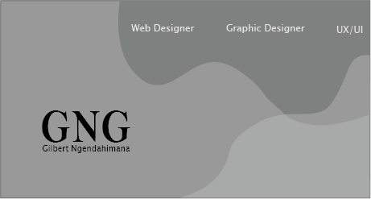Designing business cards with a focus on clean and modern aesthetics. This design emphasizes clarity, simplicity, and a contemporary look, suitable for professionals in the creative industry.
Adjustment
 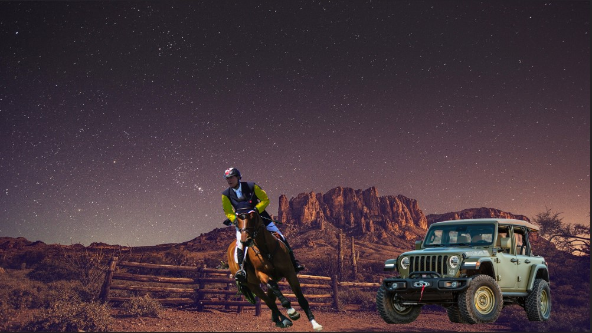
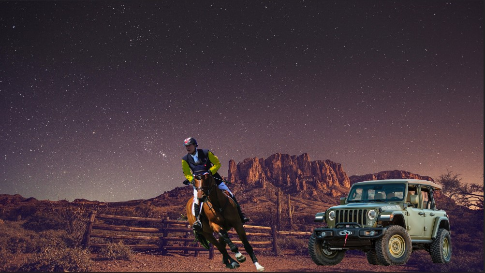
This project shows various photo editing techniques to enhance its visual appeal. The editing process includes adjustments in color balance, brightness, contrast, sharpness, and the use of filters or effects. The objective is to demonstrate the transformation of the image from its original state (below) to a more polished version (above).
Movie Poster
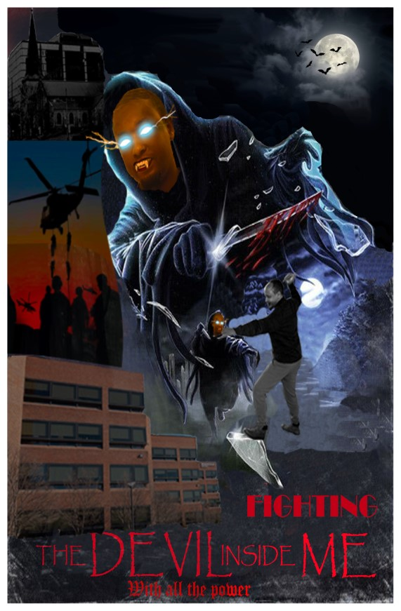This project involves the creation of a personalized movie poster featuring myself in the style of horror. The design leverages various artistic techniques, such as silhouette work, blending options, gradients, filters, adjustments, shadows, highlights, and custom brushes.